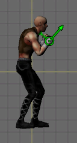

Locators

A locator is a Transform that you can animate frame-by-frame. They are useful for things like bullet or muzzle flash origin points, attaching an object to a specific point on a sprite, and more. You can define any number of locators for your sprite and animate them to match the animation of your sprite. Example: A character holding a gun as a separate sprite. The gun can be parented to a Locator positioned on the character's hand that animates frame-by-frame rotating the gun to match the sprite animation. Rotation of the gun can be animated using the facing property of the locator.
How Locators Work
When a Sprite is instantiated or gameplay begins, Sprite will spawn a child GameObject for each locator. The locator is really just a Transform parented to the Sprite. For each frame of animation in the Sprite, the locator's enabled state, position, rotation, and X direction can be animated. Objects can be parented to a locator and will be animated and enabled/disabled along with the locator during animation.
Creating
You can create any number of locators in the editor for each Master Sprite. See Using the Editor - Sprite Properties for information.
Animating
Locators can be animated in the Frame Editor. See Using the Editor - Locator Frame Properties for information.
Z offset
One property of locators that can be useful is the Z offset. This offsets the locator's position a certain distance on the local Z axis of the sprite. This allows you to make the locator appear in front of or behind the parent sprite. This can be useful if you are using the locator as a bullet spawning origin and you want to attach a muzzle flash or effect that should be drawn either in front of or behind the main sprite graphics.
Scripting
Most of your interaction with locators will happen through scripting. The Sprite.Locator class exposes useful information from the Transform which you can use to get position, direction, etc. You can also parent objects to the locator. To get a specific locator from a Sprite, call Sprite.GetLocator. See Sprite.Locator for more information about the class.